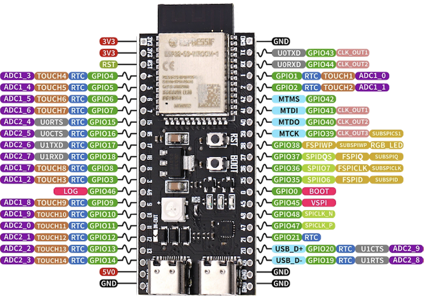

TABLEAU DE BORD
Sélectionnez une fonction pour commencer
Sélectionnez une fonction pour commencer
Cliquez sur "Scanner" pour détecter les réseaux.
Boutons de test (établi) : forcent l'état des sorties — le firmware relit et renvoie l'état réel. Écrasés par le watchdog, l'E-Stop ou une trame RPi 5 maître.
Interface physique pour le protocole binaire temps réel
Bidirectionnel : neutre 1500 µs, plage 1000–2000 µs (pinces/outils). Unidirectionnel : pleine échelle 0–100 % (gradateurs LED). Sauvegarde NVS, appliqué à chaud.
Sorties numériques pilotées par le masque gpio_cmd de la trame descendante (bit 0 = sortie 1). Watchdog série et E-Stop les forcent à OFF.
Sauvegarde NVS puis redémarrage du contrôleur après 3 s — sorties initialisées à OFF au démarrage. GPIO 19/20 (USB natif) et broches I2C/UART1 refusés.
Boutons de test (établi) : forcent l'état des sorties — le firmware relit et renvoie l'état réel. Écrasés par le watchdog, l'E-Stop ou une trame RPi 5 maître.
Bandeau WS2812 d'état à bord (NEO_GRB / 800 kHz). Cinq états du ROV, du plus informatif au plus critique : Avarie > Retour Surface > Autopilote > RPi5 connecté > Attente Réseau. La broche et le nombre de LEDs sont appliqués au démarrage (redémarrage 3 s si changement) ; les effets, couleurs et luminosités par état s'appliquent à chaud.
GPIO 19/20 (USB natif), GPIO 35-37 (bus mémoire interne des modules octaux), broches I2C actives, UART1 et broches déjà utilisées (sorties ON/OFF, entrées) sont exclus de la liste.
Polarité configurable par entrée : « Contact vers GND » (INPUT_PULLUP, active à la masse) ou « Signal +3,3 V » (INPUT_PULLDOWN, active au niveau haut). L'alarme « Voie d'eau » écrase le mode de vol et force le Retour Surface (status 0x80) tant qu'elle est active. Broches et polarités appliquées au démarrage — redémarrage différé 3 s si changement.
GPIO 19/20 (USB natif), GPIO 35-37 (bus mémoire interne des modules octaux), broches I2C actives, UART1 et broches déjà utilisées (sorties ON/OFF, bandeau LED) sont exclus des listes.
Nom affiché de chaque sortie dans le Banc de Test, le PWM Monitor et les états GPIO. Vide = nom par défaut. Sauvegarde NVS appliquée à chaud (sans redémarrage).
Correction du QNH réel (Open-Meteo — Chamoson, VS) pour l'altitude barométrique hors de l'eau uniquement : la profondeur immergée reste fondée sur la tare de surface locale et la boucle de contrôle n'est jamais impactée. Fallback transparent sur 1013.25 mbar si Internet est indisponible ou si l'option est désactivée.
QNH actuel utilisé : — mbar
Surveillance des propulseurs par l'INA3221 (tension batterie + courants ACS770 horizontaux/verticaux). Après la connexion Wi-Fi, le check pulse chaque moteur un par un et vérifie son courant ; en navigation, la détection d'intensité isole logiciellement le moteur en défaut. Sauvegarde NVS appliquée à chaud.
—
Bus n°1 — BNO085 + INA3221 + INA226 ×2. Broches SDA/SCL actuelles : —
Sauvegarde NVS puis redémarrage du contrôleur après 3 s — broches appliquées au démarrage.
Bus n°2 — MS5837 + PCA9685. Broches SDA/SCL actuelles : —
Sauvegarde NVS puis redémarrage du contrôleur après 3 s — broches appliquées au démarrage (bus partagé avec les sorties PWM).
Scan complet des deux bus I2C (adresses 0x01 à 0x7F) — les adresses découvertes alimentent les sélecteurs du routage ci-dessous (câbler → scanner → choisir).
| Adresse (Hex) | Adresse (Dec) | Bus | Statut | Périphérique détecté |
|---|
Assignez chaque module à son bus physique (I2C_0 = Wire, I2C_1 = Wire1) et à son adresse I2C, choisie parmi celles découvertes par le scan. Enregistré en NVS puis appliqué au redémarrage — le routage ne change jamais à chaud : le bus du PCA9685 porte les sorties PWM 100 Hz. Deux modules ne peuvent pas partager le même bus à la même adresse.
| Module | Adresse | Bus assigné |
|---|
Téléversement sans câble USB — propulsion neutralisée pendant l'écriture, redémarrage automatique à la fin.
pio run → .pio/build/esp32-s3-devkitc-1/firmware.binpio run -t buildfs → .pio/build/esp32-s3-devkitc-1/littlefs.binInjection de fausses valeurs capteurs pour tester les coupures de sécurité sur l'établi (seuils ACS770, tensions batteries, blocage moteurs). Disponible sur grand écran uniquement.

Mode actif : —
┌──────────────┐ ┌──────────────┐
│ ESP32-S3 │ │ RPi 5 │
│ │ │ │
│ USB-C ◄───┼────USB──┼─► USB-A/C │
│ (natif) │ Cordon │ /dev/ttyACM0│
│ │ direct │ │
└──────────────┘ └──────────────┘
| ESP32-S3 | → | RPi 5 | Note |
|---|---|---|---|
| USB-C | ⟷ | USB-A / USB-C | Cordon direct, sans adaptateur |
| — | — | /dev/ttyACM0 | Port série USB-CDC natif |
| — | — | 921 600 bauds | Débit du protocole binaire |
┌──────────────┐ ┌──────────────┐
│ ESP32-S3 │ │ RPi 5 │
│ │ │ │
│ GPIO 1 (RX) ◄─────────┼── TXD (GPIO14)
│ GPIO 2 (TX) ──────────► RXD (GPIO15)
│ GND ◄─────────► GND │
│ │ │ │
└──────────────┘ └──────────────┘
Serial1 @ 921 600 bauds /dev/ttyAMA0
| ESP32-S3 | → | RPi 5 | Note |
|---|---|---|---|
| GPIO 1 (RX) | ← | TXD (GPIO 14) | Croisé : TX→RX |
| GPIO 2 (TX) | → | RXD (GPIO 15) | Croisé : RX←TX |
| GND | ⟷ | GND | Masse commune obligatoire |
| 921 600 bauds, 8N1 | |||
Deux bus I2C matériels indépendants : le MS5837 perturbe les lectures SHTP du BNO085 lorsqu'ils partagent le même bus — d'où la séparation physique. Chaque bus doit avoir ses propres résistances de pull-up (4,7 kΩ vers 3V3).
GPIO 10 (SDA) ──┬─────────┬─────────┬─────────┬───[4,7 kΩ]── 3V3
│ │ │ │
┌──┴────┐ ┌──┴────┐ ┌──┴────┐ ┌──┴────┐
│ BNO085│ │INA3221│ │INA226 │ │INA226 │
│ 0x4A │ │ 0x40 │ │ 0x44 │ │ 0x45 │
└──┬────┘ └──┬────┘ └──┬────┘ └──┬────┘
│ │ │ │
GPIO 11 (SCL) ──┴─────────┴─────────┴─────────┴───[4,7 kΩ]── 3V3
3V3 ──► VCC des 4 modules GND ──► GND des 4 modules
GPIO 6 (SDA) ──┬──────────┬───[4,7 kΩ]── 3V3
│ │
┌───┴───┐ ┌───┴───┐
│ MS5837│ │PCA9685│
│ 0x76 │ │ 0x40 │
└───┬───┘ └───┬───┘
│ │
GPIO 7 (SCL) ──┴──────────┴───[4,7 kΩ]── 3V3
3V3 ──► VCC des 2 modules GND ──► GND des 2 modules
| Signal | Broche ESP32-S3 | Description |
|---|---|---|
| SDA (bus n°1) | GPIO 10 | Données I2C — BNO085 + INA3221 + INA226 ×2 |
| SCL (bus n°1) | GPIO 11 | Horloge I2C — BNO085 + INA3221 + INA226 ×2 |
| SDA (bus n°2) | GPIO 6 | Données I2C — MS5837 + PCA9685 |
| SCL (bus n°2) | GPIO 7 | Horloge I2C — MS5837 + PCA9685 |
| 3V3 | 3V3 | Alimentation logique capteurs |
| GND | GND | Masse commune |
| Module | Bus I2C | Adresse I2C | Fonction | Remarque |
|---|---|---|---|---|
| BNO085 | n°1 (GPIO 10/11) | 0x4A | IMU 9-DOF (fusion inertielle) | Quaternions natifs — bus dédié |
| INA3221 | n°1 (GPIO 10/11) | 0x40 | Triple mesure énergie propulsion | Ch1 : V_BAT — Ch2/3 : courants ACS770 (propulseurs H/V) |
| INA226 #2 | n°1 (GPIO 10/11) | 0x44 | Wattmètre Électronique de commande | Batterie 2 — carte de commande & capteurs |
| INA226 #3 | n°1 (GPIO 10/11) | 0x45 | Wattmètre Projecteur LED | Batterie 2 — éclairage (projecteur) |
| MS5803 / MS5837 | n°2 (GPIO 6/7) | 0x76 | Pression / Profondeur | Résolution 0.01 mbar — séparé du BNO085 (incompatibilité bus) |
| PCA9685 | n°2 (GPIO 6/7) | 0x40 | Contrôleur PWM 16 canaux | 50 Hz, ESC/Servos/Gradateurs |